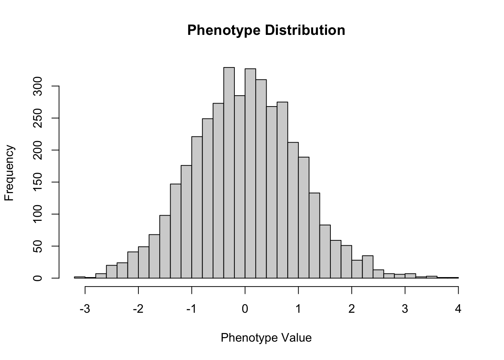
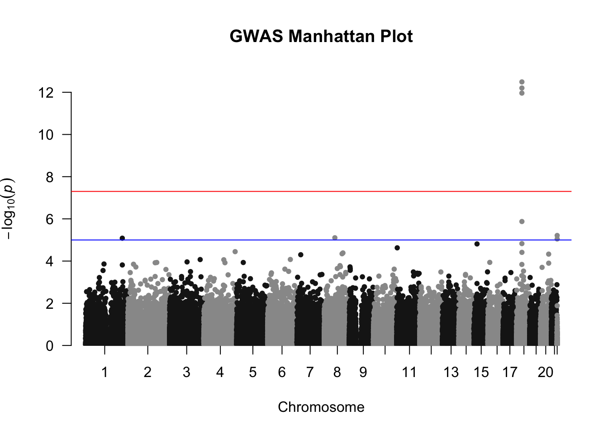
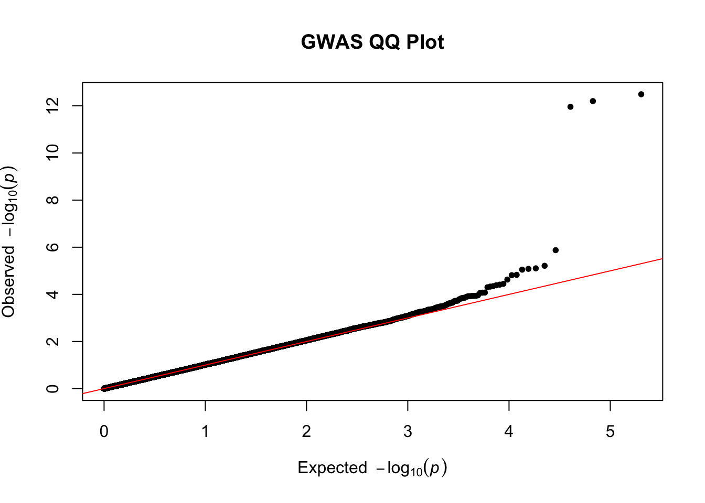

# Your code here...
fam <- data.table::fread("../data/gwa.A2.fam", header = FALSE)
n_samples <- nrow(fam)
n_samples[1] 4000You will need PLINK2 installed and available in your PATH. Please follow the OS-specific setup guide in SETUP.md. The dataset for this assignment consists of the following binary PLINK files: gwa.A2.bed, gwa.A2.bim, gwa.A2.fam , available at the following Google Drive link: https://drive.google.com/drive/folders/1rHoy3z52Yyj985ukjjtLhfIBxchpyYtZ?usp=drive_link. Please download all three files and save them in 02_activities/data/.
Before you run any models, first get familiar with the dataset. You may find data.table::fread() in R helpful for reading .bim and .fam files.
.fam file. How many samples does the dataset contain?# Your code here...
fam <- data.table::fread("../data/gwa.A2.fam", header = FALSE)
n_samples <- nrow(fam)
n_samples[1] 4000.bim file. How many SNPs does the dataset contain?# Your code here...
bim <- data.table::fread("../data/gwa.A2.bim", header = FALSE)
n_snps <- nrow(bim)
n_snps[1] 306102# Your code here...
phenotype <- fam$V6
hist(phenotype, breaks = 30, main = "Phenotype Distribution", xlab = "Phenotype Value", ylab = "Frequency") 
# It looks relatively Gaussian, with a bell-shaped curve and no outliers.Now we will perform QC using PLINK2 for the genotype files in gwa.A2.
--geno) ≤ 0.01, individual missingness (--mind) ≤ 0.10, and HWE p-value ≥ 0.00005, and output the QC’ed dataset as gwa.qc.A2.# Your code here...
plink2 --bfile ../data/gwa.A2 --maf 0.05 --geno 0.01 --mind 0.10 --hwe 0.00005 --make-bed --out ../data/gwa.qc.A2PLINK v2.00a5.12 M1 (25 Jun 2024) www.cog-genomics.org/plink/2.0/
(C) 2005-2024 Shaun Purcell, Christopher Chang GNU General Public License v3
Logging to ../data/gwa.qc.A2.log.
Options in effect:
--bfile ../data/gwa.A2
--geno 0.01
--hwe 0.00005
--maf 0.05
--make-bed
--mind 0.10
--out ../data/gwa.qc.A2
Start time: Fri Apr 3 15:03:18 2026
16384 MiB RAM detected; reserving 8192 MiB for main workspace.
Using up to 10 threads (change this with --threads).
4000 samples (2000 females, 2000 males; 4000 founders) loaded from
../data/gwa.A2.fam.
306102 variants loaded from ../data/gwa.A2.bim.
1 quantitative phenotype loaded (4000 values).
Calculating sample missingness rates... 0%21%42%64%85%done.
0 samples removed due to missing genotype data (--mind).
4000 samples (2000 females, 2000 males; 4000 founders) remaining after main
filters.
4000 quantitative phenotype values remaining after main filters.
Calculating allele frequencies... 0%21%42%64%85%done.
--geno: 196578 variants removed due to missing genotype data.
--hwe: 6 variants removed due to Hardy-Weinberg exact test (founders only).
8435 variants removed due to allele frequency threshold(s)
(--maf/--max-maf/--mac/--max-mac).
101083 variants remaining after main filters.
Writing ../data/gwa.qc.A2.fam ... done.
Writing ../data/gwa.qc.A2.bim ... done.
Writing ../data/gwa.qc.A2.bed ... 0%21%43%65%87%done.
End time: Fri Apr 3 15:03:18 2026Using PLINK2, perform PCA on the unrelated, LD-pruned dataset to obtain principal components.
(Hint: Refer to the PCA section in the GWAS Tutorial II. You should use a *.prune.in file to select a set of independent SNPs before performing PCA.)
# Your code here...
plink2 --bfile ../data/gwa.qc_unrelated.A2 --extract ../data/gwa.qc.A2.prune.prune.in --pca 10 --out ../data/gwa.qc_unrelated.A2.pcaPLINK v2.00a5.12 M1 (25 Jun 2024) www.cog-genomics.org/plink/2.0/
(C) 2005-2024 Shaun Purcell, Christopher Chang GNU General Public License v3
Logging to ../data/gwa.qc_unrelated.A2.pca.log.
Options in effect:
--bfile ../data/gwa.qc_unrelated.A2
--extract ../data/gwa.qc.A2.prune.prune.in
--out ../data/gwa.qc_unrelated.A2.pca
--pca 10
Start time: Fri Apr 3 15:03:20 2026
16384 MiB RAM detected; reserving 8192 MiB for main workspace.
Using up to 10 threads (change this with --threads).
4000 samples (2000 females, 2000 males; 4000 founders) loaded from
../data/gwa.qc_unrelated.A2.fam.
101083 variants loaded from ../data/gwa.qc_unrelated.A2.bim.
1 quantitative phenotype loaded (4000 values).
--extract: 21914 variants remaining.
Calculating allele frequencies... 0%61%done.
21914 variants remaining after main filters.
Constructing GRM: 0%1%2%3%4%5%6%7%8%9%10%11%12%13%14%15%16%17%18%19%20%21%22%22%23%24%25%26%27%28%29%30%31%32%33%34%35%36%37%38%39%40%41%42%43%44%45%45%46%47%48%49%50%51%52%53%54%55%56%57%58%59%60%61%62%63%64%65%66%67%68%68%69%70%71%72%73%74%75%76%77%78%79%80%81%82%83%84%85%86%87%88%89%90%91%91%92%93%94%95%96%97%98%99%done.
Correcting for missingness... 0%1%2%3%4%5%6%7%8%9%10%11%12%13%14%15%16%17%18%19%20%21%22%23%24%25%26%27%28%29%30%31%32%33%34%35%36%37%38%39%40%41%42%43%44%45%46%47%48%49%50%51%52%53%54%55%56%57%58%59%60%61%62%63%64%65%66%67%68%69%70%71%72%73%74%75%76%77%78%79%80%81%82%83%84%85%86%87%88%89%90%91%92%93%94%95%96%97%98%99%done.
Extracting eigenvalues and eigenvectors... done.
--pca: Eigenvectors written to ../data/gwa.qc_unrelated.A2.pca.eigenvec , and
eigenvalues written to ../data/gwa.qc_unrelated.A2.pca.eigenval .
End time: Fri Apr 3 15:03:27 2026We now test for association between each SNP and the continuous phenotype, adjusting for population structure using the top 3 PCs.
Assume that:
You will run GWAS on the unrelated, QC’ed dataset gwa.qc_unrelated.A2.
You have a covariate file (e.g., the *.eigenvec output from the PCA analysis) containing PC1–PC3 for each individual.
gwa.qc_unrelated.A2 as the input dataset. Adjust for PCs 1–3 as covariates.# Your code here...
plink2 --bfile ../data/gwa.qc_unrelated.A2 --covar ../data/gwa.qc_unrelated.A2.pca.eigenvec --covar-name PC1,PC2,PC3 --linear hide-covar --out ../data/gwa.qc_unrelated.A2.gwasPLINK v2.00a5.12 M1 (25 Jun 2024) www.cog-genomics.org/plink/2.0/
(C) 2005-2024 Shaun Purcell, Christopher Chang GNU General Public License v3
Logging to ../data/gwa.qc_unrelated.A2.gwas.log.
Options in effect:
--bfile ../data/gwa.qc_unrelated.A2
--covar ../data/gwa.qc_unrelated.A2.pca.eigenvec
--covar-name PC1,PC2,PC3
--glm hide-covar
--out ../data/gwa.qc_unrelated.A2.gwas
Start time: Fri Apr 3 15:03:27 2026
16384 MiB RAM detected; reserving 8192 MiB for main workspace.
Using up to 10 threads (change this with --threads).
4000 samples (2000 females, 2000 males; 4000 founders) loaded from
../data/gwa.qc_unrelated.A2.fam.
101083 variants loaded from ../data/gwa.qc_unrelated.A2.bim.
1 quantitative phenotype loaded (4000 values).
3 covariates loaded from ../data/gwa.qc_unrelated.A2.pca.eigenvec.
Calculating allele frequencies... 0%64%done.
--glm linear regression on phenotype 'PHENO1': 0%64%done.
Results written to ../data/gwa.qc_unrelated.A2.gwas.PHENO1.glm.linear .
End time: Fri Apr 3 15:03:28 2026# Your code here...
library(qqman)For example usage please run: vignette('qqman')Citation appreciated but not required:Turner, (2018). qqman: an R package for visualizing GWAS results using Q-Q and manhattan plots. Journal of Open Source Software, 3(25), 731, https://doi.org/10.21105/joss.00731.gwas_results <- data.table::fread("../data/gwa.qc_unrelated.A2.gwas.PHENO1.glm.linear")
gwas_results <- as.data.frame(gwas_results)
gwas_results <- gwas_results[!is.na(gwas_results$P), ]
manhattan(gwas_results, chr = "#CHROM", bp = "POS", snp = "ID", p = "P", main = "GWAS Manhattan Plot")
# Your code here...
qq(gwas_results$P, main = "GWAS QQ Plot")
| Criteria | Complete | Incomplete |
|---|---|---|
| Data inspection | Correct sample and SNP counts; phenotype plot with a brief comment on Gaussianity. | Counts or phenotype description/plot missing or incorrect. |
| QC & LD pruning | Correct PLINK2 QC command and thresholds. | QC/pruning commands, thresholds, or output datasets missing or incorrect. |
| Relatedness & PCA | Correct use of PLINK2 command to obtain unrelated samples and PCA run on pruned SNPs. | Relatedness step, unrelated dataset, or PCA analysis missing or incorrect. |
| GWAS & visualisation | Linear regression GWAS with PCs as covariates; Manhattan and QQ plots produced. | GWAS command, or Manhattan/QQ plots missing or clearly incorrect. |
🚨 Please review our Assignment Submission Guide 🚨 for detailed instructions on how to format, branch, and submit your work. Following these guidelines is crucial for your submissions to be evaluated correctly.
Submission Due Date: 11:59 PM – 01/04/2026
The branch name for your repo should be: assignment-2
What to submit for this assignment:
assignment_2.qmd).quarto render assignment_2.qmd.assignment_2.qmd and the rendered HTML file assignment_2.html in your pull request.What the pull request link should look like for this assignment: https://github.com/<your_github_username>/gen_data/pull/<pr_id>
Checklist:
assignment-2.assignment_2.qmd and assignment_2.html are included in the pull request.